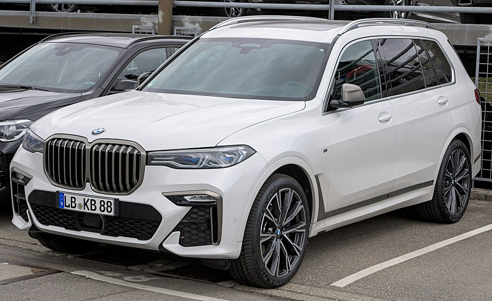
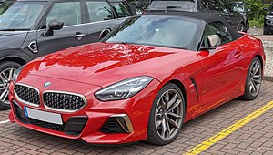

BMW M5 F90
Роки виробництва: 2017-теперішній час
Тип кузова: Седан
Колісна база: 4*4
Об'єм бака: 68 л.

BMW X7
Роки виробництва: 2018-теперішній час
Тип кузова: 5‑дв. SUV
Колісна база: 4*4
Трансмісія: 8-ступінчата АКПП ZF
Об'єм бака: 83 л.

BMW Z4 (G29)
Роки виробництва: 2018-теперішній час
Тип кузова: 2-дверний Родстер
Колісна база: 4*4
Об'єм бака: 52 л.